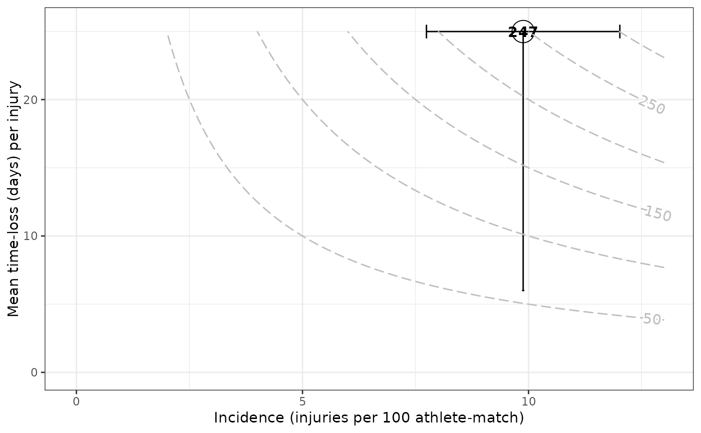

Depict risk matrix plots, a graph in which the case (e.g. injury) incidence (frequency) is plotted against the average days lost per case (consequence). The point estimate of case incidence together with its confidence interval is plotted, according to the method specified. On the y-axis, the mean time-loss per case together with \(\pm\) IQR (days) is plotted. The number shown inside the point and the point size itself, report the case burden (days lost per athlete-exposure time), the bigger the size the greater the burden. See References section.
Usage
gg_riskmatrix(
injd,
by = NULL,
method = c("poisson", "negbin", "zinfpois", "zinfnb"),
add_contour = TRUE,
title = NULL,
xlab = "Incidence (injuries per _)",
ylab = "Mean time-loss (days) per injury",
errh_height = 1,
errv_width = 0.05,
cont_max_x = NULL,
cont_max_y = NULL,
...
)Arguments
- injd
injdS3 object (seeprepare_all()).- by
Character specifying the name of the column. A (categorical) variable referring to the "type of case" (e.g. "type of injury" muscular/articular/others or overuse/not-overuse etc.) according to which visualize epidemiological summary statistics (optional, defaults to
NULL).- method
Method to estimate the incidence (burden) rate. One of "poisson", "negbin", "zinfpois" or "zinfnb"; that stand for Poisson method, negative binomial method, zero-inflated Poisson and zero-inflated negative binomial.
- add_contour
Logical, whether or not to add contour lines of the product between case incidence and mean severity (i.e. 'incidence x average time-loss'), which leads to case burden (defaults to
TRUE).- title
Text for the main title passed to
ggplot2::ggtitle().- xlab
x-axis label to be passed to
ggplot2::xlab().- ylab
y-axis label to be passed to
ggplot2::ylab().- errh_height
Set the height of the horizontal interval whiskers; the
heightargument forggplot2::geom_errorbar().- errv_width
Set the width of the vertical interval whiskers; the
widthargument forggplot2::geom_errorbar().- cont_max_x, cont_max_y
Numerical (optional) values indicating the maximum on the x-axis and y-axis, respectively, to be reached by the contour.
- ...
Other arguments passed on to
ggplot2::geom_contour()andmetR::geom_text_contour(). These are often aesthetics likebins = 15orbreaks = 10.
References
Bahr R, Clarsen B, Derman W, et al. International Olympic Committee consensus statement: methods for recording and reporting of epidemiological data on injury and illness in sport 2020 (including STROBE Extension for Sport Injury and Illness Surveillance (STROBE-SIIS)) British Journal of Sports Medicine 2020; 54:372-389.
Fuller C. W. (2018). Injury Risk (Burden), Risk Matrices and Risk Contours
in Team Sports: A Review of Principles, Practices and Problems.Sports
Medicine, 48(7), 1597–1606.
doi:10.1007/s40279-018-0913-5
Examples
# \donttest{
df_exposures <- prepare_exp(raw_df_exposures, person_id = "player_name",
date = "year", time_expo = "minutes_played")
df_injuries <- prepare_inj(raw_df_injuries, person_id = "player_name",
date_injured = "from", date_recovered = "until")
injd <- prepare_all(data_exposures = df_exposures,
data_injuries = df_injuries,
exp_unit = "matches_minutes")
# }
# \donttest{
gg_riskmatrix(injd)
#> Warning: An injury average time-loss is bigger than its 75% quartile
#> time-loss. Possibly, there is a concrete long-term injury in the data.
#> For plotting purposes the vertical upper limit (i.e. 75% quartile)
#> is lengthened to the average value.
#> `height` was translated to `width`.

gg_riskmatrix(injd, by = "injury_type", title = "Risk matrix")
#> Warning: An injury average time-loss is bigger than its 75% quartile
#> time-loss. Possibly, there is a concrete long-term injury in the data.
#> For plotting purposes the vertical upper limit (i.e. 75% quartile)
#> is lengthened to the average value.
#> `height` was translated to `width`.
# }